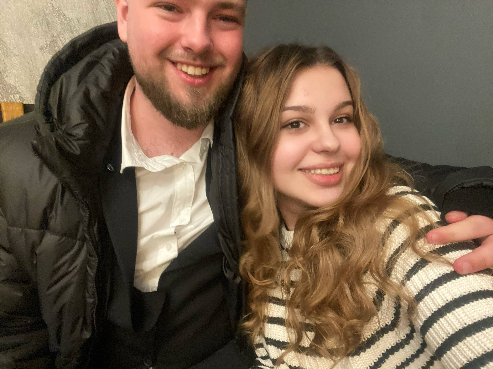
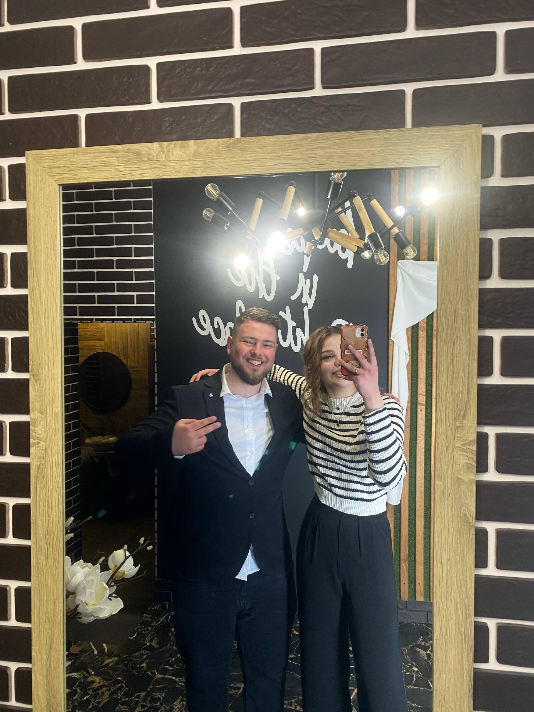
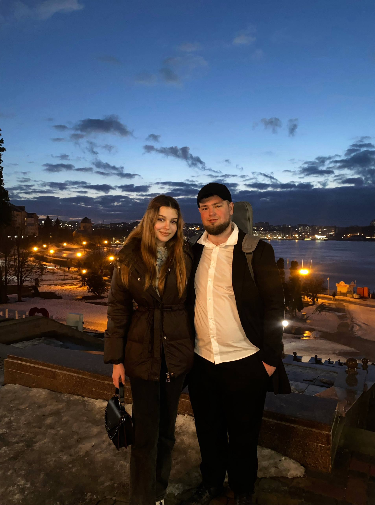
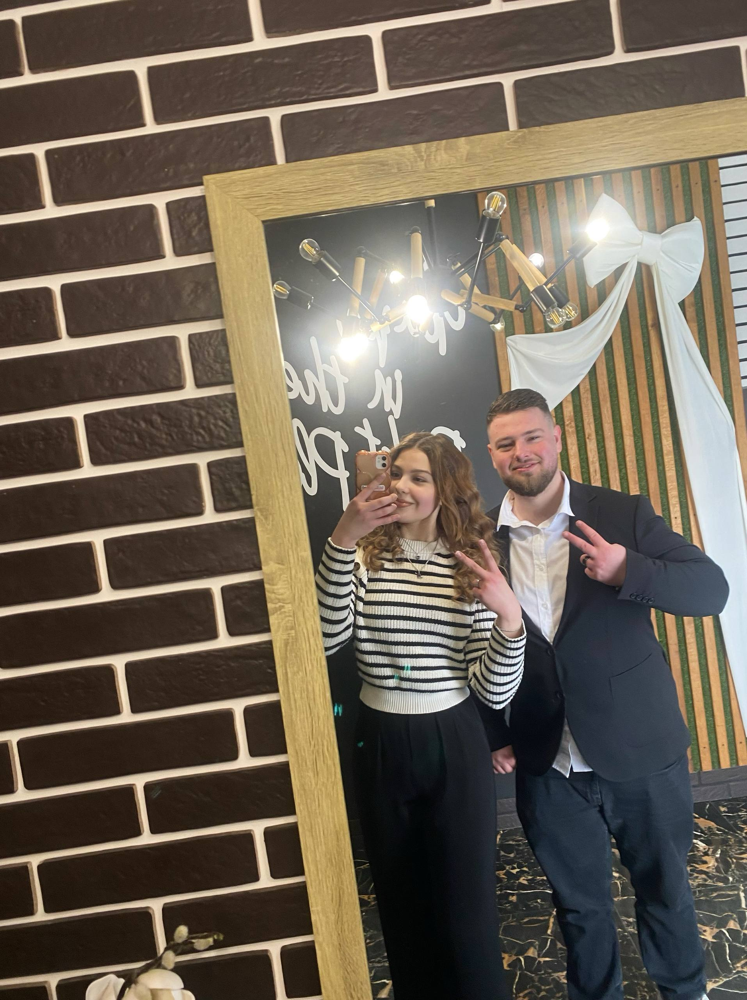
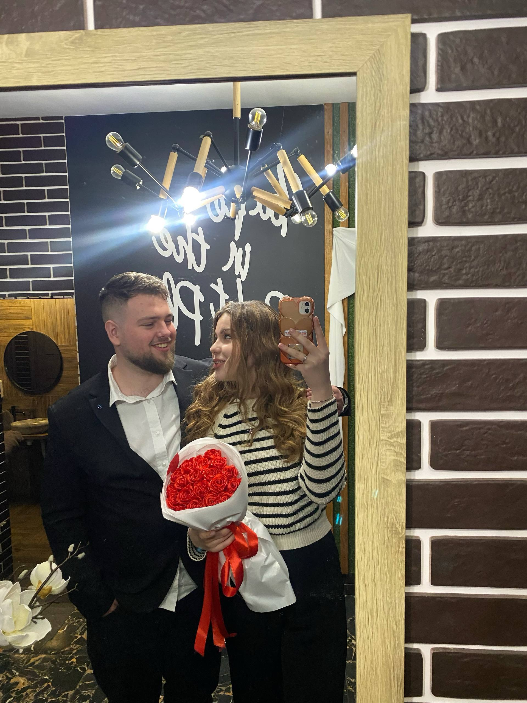
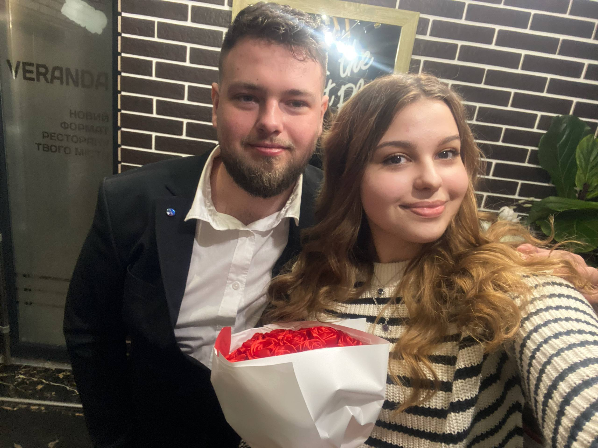
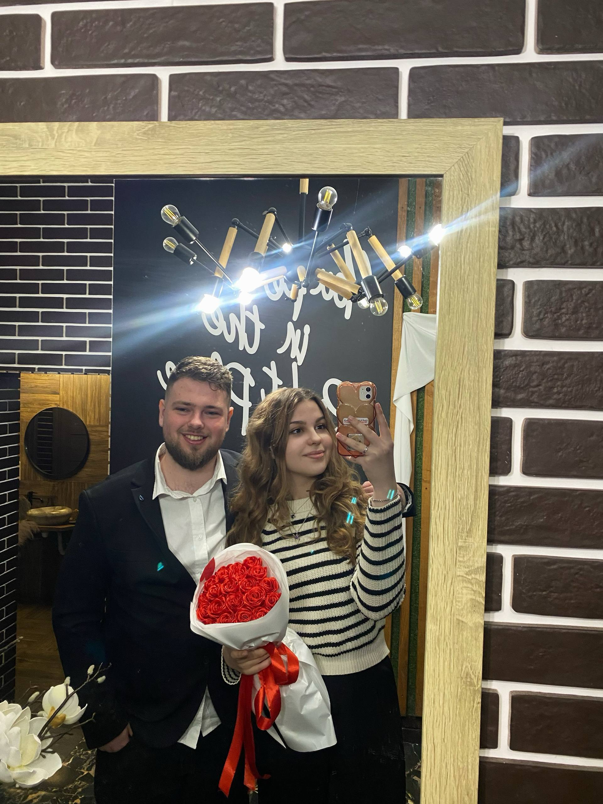

Музика завжди нагадує про особливі моменти. Нехай цей плейлист і ці кадри стануть маленьким нагадуванням про те, як важливо цінувати те, що ми маємо. Ти робиш цей світ кращим просто своєю присутністю.
Живі спогади
Made with GRANGER